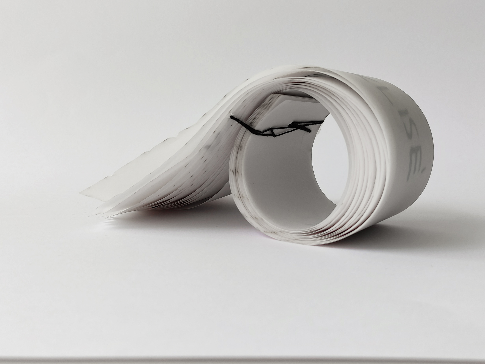
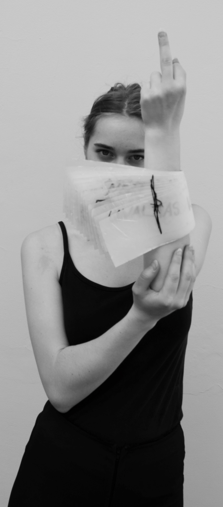
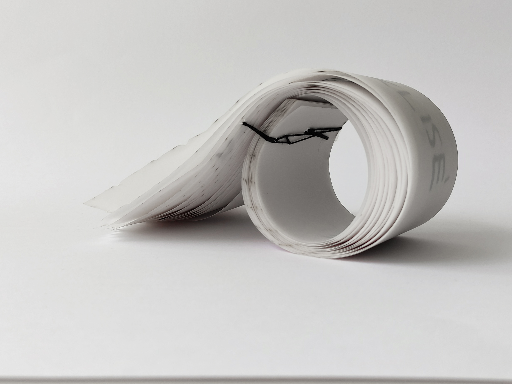
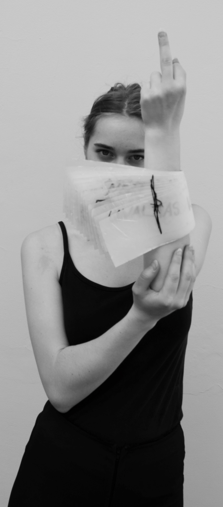
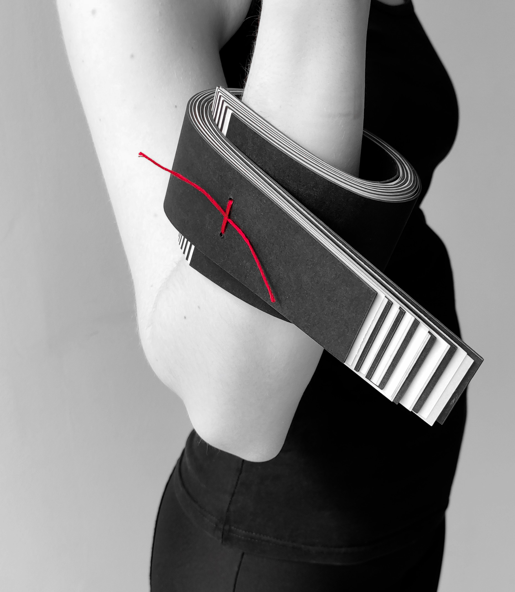
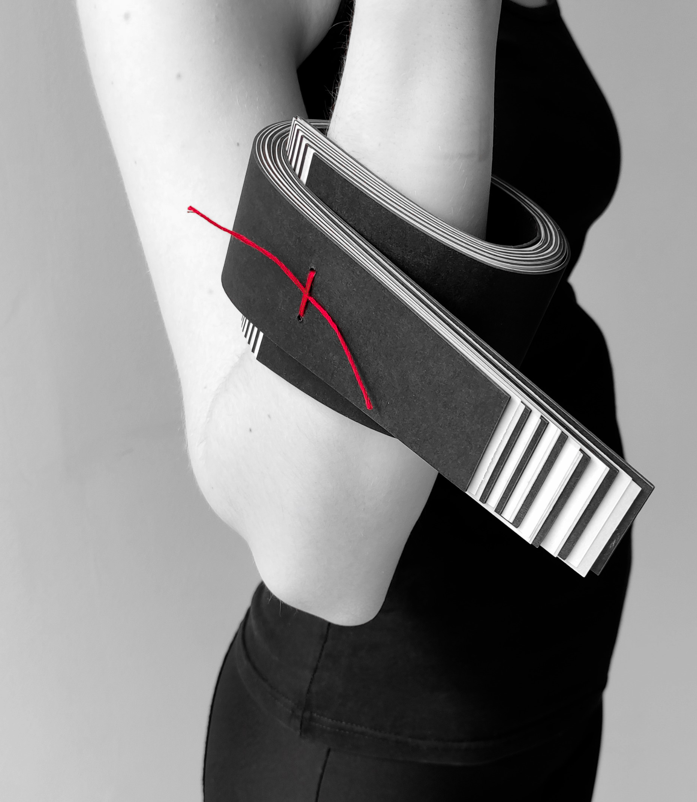

7Layers Exhibition
In 2025, Budapest Pride celebrated its 30th anniversary – and to mark this special milestone, six artists and one collective had come together to created the 7Layers exhibition.
The title 7Layers refers to the layers of human skin – the body’s largest and most expressive organ, offering both physical protection and a powerful tool for sensation and communication.
Just like the nerve endings in our skin absorb countless stimuli from the world, the artists soak in the impulses around them and express them through their creations.
Through diverse interpretations, the artists placed the human body at the center – turning the exhibition space into a shared "skin surface," where experiences and emotions met.
7Layers was not only an artistic exploration of the body and perception, but also a collective act of visibility: our goal is to shine a light on the work of queer artists and creators who explore themes of sexuality.
We were grateful to have brought this project to life as part of the official program of the Budapest Pride Festival.
Exhibited Artists:
Lilac 007, Lamm Lenke, Mérey Máté, Szalay Csenge, Szarka Dániel, Fánka, and the BLISS collective: Pálfi Lujza, Parlagi Róza, Kaposvári Zsófi, and Bodócs Szelina.


Rewritten Label Ring Collection
material: silver or bronze
year: 2025
This ring series was born out of a very real experience that many of us in the community face daily: the oversimplified, insulting labels that are slapped on us. The initial idea was to create classic-shaped rings featuring the phrase “hülye buzi” = "stupid fag," but I later changed it to "huje buzi" which is a strong typo and often seen online.
On the jewelry, I deliberately hammered and distorted the word "huje" and replaced it with new, dignified descriptors that were punctured into the piece. These are terms that are rarely, if ever, used in public discourse regarding gay people: “smart,” “patriot,” “religious” and many others. With these rings, I wanted to express two things. First: rewriting the narrow and distorted image that’s often painted of us. Second: reclaiming the word "buzi" a word that’s been used against us countless times. For me, this whole process is an act of self-definition, declaring who we are, based on our own terms, not others’ words.


Rainbow Book Brooch - Protect Our Children from the Government Propaganda
year: 2024
material: powder coated aluminum, plastic wrap, brass, stainless steel
This brooch draws attention to the growing censorship faced by LGBTQ+ artists in Hungary. I see the so-called “plastic wrap” law as a symbolic moment; it restricts the open sale of queer-themed literature by mandating that such books be shrink-wrapped in stores.
The brooch shows that the rainbow-colored book still opens slightly beneath the suffocating plastic layer, resisting both oppression and control. The vibrant colors of the aluminum plates shine through the packaging, signaling that complete silencing is impossible.
Sadly, these kinds of restrictions often lead artists to self-censor or to leave the country altogether.


Coat of Arms Lobster Medal
year: 2025
material: brass, silver, wood, stainless steel
I imagined this piece as a fictional award, a playful yet meaningful tribute to LGBTQ+ individuals or allies who, through their bold public presence over the past year, have helped move acceptance forward in Hungary.
The medal features a lobster, proudly wearing a smaller silver lobster medal on its chest, a literal case of “object within the object.” I chose the lobster intentionally: it used to be a pejorative slang word for gay people in Hungarian, but here, I’m reclaiming and reshaping its meaning. This lobster now wears its “coat of arms” with pride and self-assurance, a bit ironic, but full of significance.
For me, this work is humorous, honest, and encourages a symbolic pat on the back for those who stand up for diversity, even when it’s not easy.


ELECTRO-VASES
course leaderS: Flóra VÁGI, Zoltán LUBLOY
year: 2025
material: eéectroformed copper
My first approach worked with the tension between used and unused surfaces of objects. Onto these quiet areas I grew electroformed copper guided by a coral-like doodle motif, a pattern that slowly spread and thickened through the process. The result was a series of vases where delicate, hand-drawn lines turned into solid metallic growths — fragile sketches becoming enduring structures. These pieces examined how absence can be activated and how overlooked details can gain new material presence.
.jpg)
.jpg)
.jpg)
CIRCUS AWARD DESIGN
course leader: Krisztián ÁDÁM
year: 2024
material: porcelain
model: Kincső Keglevich
Our final semester’s task was to design an award in a cli ent-based situation with the participation of the Capital Circus of Budapest. I chose to design for the Newcomer Show Prize.
For this, I started my research along the keywords of tradi tion, playfulness, and status. This led me to the classic, pointed clown hat as the main motif, an emblematic form that has accompanied circuses for centuries, from the commedia dell’arte troupes through Pi errot to today’s white clowns. This way, passing on a hatful of tradition to young talents.
My material choice fell on por celain due to its pure white ap pearance, nobility, and ability to be mass-produced.


ELECTRO-BOWLS
course leader: Zoltán TÓTH
year: 2023
material: copper
In our fifth semester, our task was to design a bowl, with the requirement of using metal as the central material. Once again, I embarked on an expe riment, this time delving into the technique of electrofor ming.
The essence of this technique lies in creating a thicker metal layer through electrolysis, eit her as an independent object or as a coating. Historically, it was primarily used in prin ting, and currently, it’s used for museum replicas. However, the crystalline, wild formations produced as a byproduct were considered undesirable in the industry and were concealed.
I aimed to showcase this dua lity of objects created through this technique in my bowl set, drawing formal inspiration from 20th-century digital di agrams depicting the effect of gravity on the space-time continuum.
.jpg)
.jpg)
.jpg)
QUAIL EGG SETTING
year: 2022
material: silicone, paracord, quail eggshell
course leader: Zoltán TÓTH
model: Máté MÉREY
In this design task, we had to safely encase a blown qua il egg in an alternative way in jewelry. In contrast to its small, fragile shell, I began to think about a flexible encasing layer, the final material of which be came a dual-layer silicone.
In its formal design, I returned to the motif of the egg, crea ting a turned-out, flipped-up caricature of it, tying a knot on its pinched „white” to make the jewelry wearable around the neck. The pattern form was turned from aluminum, from which the silicone pattern was created.
Due to the jewelry’s hollow and flexible nature, it can be stret ched and fitted with a tool, allowing the delicate eggshell to be placed inside. Thus, the opening serves not only an aesthetic role, showcasing the internal content when worn, but also functions as a functi onal aperture.
.jpg)
.jpg)
.jpg)
ALTERNATIVE SETTING
year: 2022
material: plywood, garnet, copper, brass
course leader: Zoltán TÓTH
model: Abel DUTOURNIER
Another design task of our se mester was to create a novel setting for a traditional, face ted gemstone.
For this, I chose wood as the base material, intrigued by its flexibility. I designed an elon gated shape that, through wedging, would accommoda te the stone snugly. To prevent breakage, laminated wood proved most suitable for the task. Pre-cutting the stone bed ensured its stability, and to prevent it from being pul led out, I also equipped the ring with an additional copper strap.
Formally, I was inspired by the rounded nature of the stone’s cut and the central symmetry of its grip. By shifting the cle avage in one direction, a more unified, gestural form emerges when viewed from the side.
.jpg)
.jpg)

SPHERE-RING
year: 2023
material: steel, mineral orb
model: Kincső Keglevich
The craft task related to the se mester also aimed at setting. Here, we had to design a ring with an alternative grip for a given shaped stone.
As a challenge, I aimed to create a tension jewelry pie ce, for which I began using steel early on due to its flexi bility and toughness. To split the hard steel wire ring that tensions around the spherical mineral, I personally made the hand-operated tool.


MONOLITH
year: 2022
material: mycelium-composite
course leader: Nóri TENGELY
model: Kincső KEGLEVICH
The design task of this se mester was titled „Monolith” requiring our jewelry to be made from a continuous ma terial. My goal was to experi ment with materials, for which I found the mycelium compo site to be a promising innova tion.
Thematically, I aligned this ear ring with Stella McCartney’s Spring 2022 collection, which featured mushroom leather bags. For the basic appearan ce, I chose the ear protector shape worn by water polo players, fitting with the breakt hroughs seen in the collection, which add excitement to the visibility of the ear.
The material experiments yi elded good results with the mushroom. Through multipart gypsum and wax growth for ms, the jewelry pieces were fully formed.


 



 

Paper Bangle set
year: 2022
material: paper, yarn
course leader: András BÁNFALVI
This design task of the se mester was the utilization of paper at the level of jewelry. In this, I found the layering of various qualities of paper to be an exciting challenge. The rhythmic alternation of crepe, photo cardboard, and tracing paper resulted in dynamic stri ping.
The papers were fastened together using bookbinding techniques, evoking the mood of Japanese notebooks. To en hance the concept’s dynam ism, some jewelry pieces fea tured red-and-white binding thread.
After finding the baseline and establishing a regular system, I expanded the work towards more chaotic arrangements to explore the widest palette possible. In the latter, emotio nal expression began to emer ge, serving as a therapeutic approach to stress manage ment.
Casted Bronze Objects


STRUCTURE
course leaders: Krisztián ÁDÁM, Péter ORR
year: 2021
Our admission to university began with our first summer camp, during which we famili arized ourselves with the tech nique of bronze casting in a task named „Structure”. Using wax sheets and rod materials, we were tasked with creating a structure, preparing it for casting, pouring it on-site, and then refining it later in the se mester.
I aimed to create a freely trea ted constructivist-style scul pture, where the rod materi als seemingly penetrate the sheets, whose surfaces vary in pairs.


SMOKEY-PUFFBALL
course leaders: Krisztián ÁDÁM, Péter ORR
creation: 2022
In the elective course of the second semester, under the title „Body of Smoke,” we were tasked with creating a plastic object with an incense holder function. We had to choose some form of vitality as our inspirational basis.
I drew inspiration from the shapes of puffball mushrooms, as their spore dispersal is very similar to the movement of smoke, thus creating a fitting combination. To achieve this, I poured plaster into flexible tu bes and manipulated them un til I obtained the desired form.
During our usual summer camp in Mezőtúr, the object was cast. For this, I needed to build an internal inlet system to preserve the natural surface of the casting outside.
Cast Iron Objects


ENDLESS RUST KNOT
course leader: Nils HINT
year:2023
I created this object during our foundry course called „Malmi valu” in Tallinn. The technique used was a special foam cast ing method, where I made a knotted form out of styrofoam. After creating sprues, I molded it in sand, and as the molten iron flows in, it burns away the foam form, taking its place.
The idea of knotting comes from my childhood, where the four-square braid is its name, which I usually used for my zip pers and other items.
The knot itself is a symbol of infinity, intertwining into itself, forever standing unbreakable. The rusting, as a surface treat ment, symbolizes the factor of time in the context, questio ning the eternity of the sculp ture’s afterlife.


SWINGING
course leader: Nils HINT
year:2023
This smaller sculpture was also created during the Malmiva lu foundry course, using wax casting.
My playful concept encom passed an object that, like the „Jack-in-the-box,” always re turns to its original position. The base shape was a sphere, from which I carved out the hollow object with a heavier bottom. To further enhance the playful aspect, I also made a conical rod with a strong magnet inserted into it, al lowing the rocking sculpture to be pulled out of its initial position.